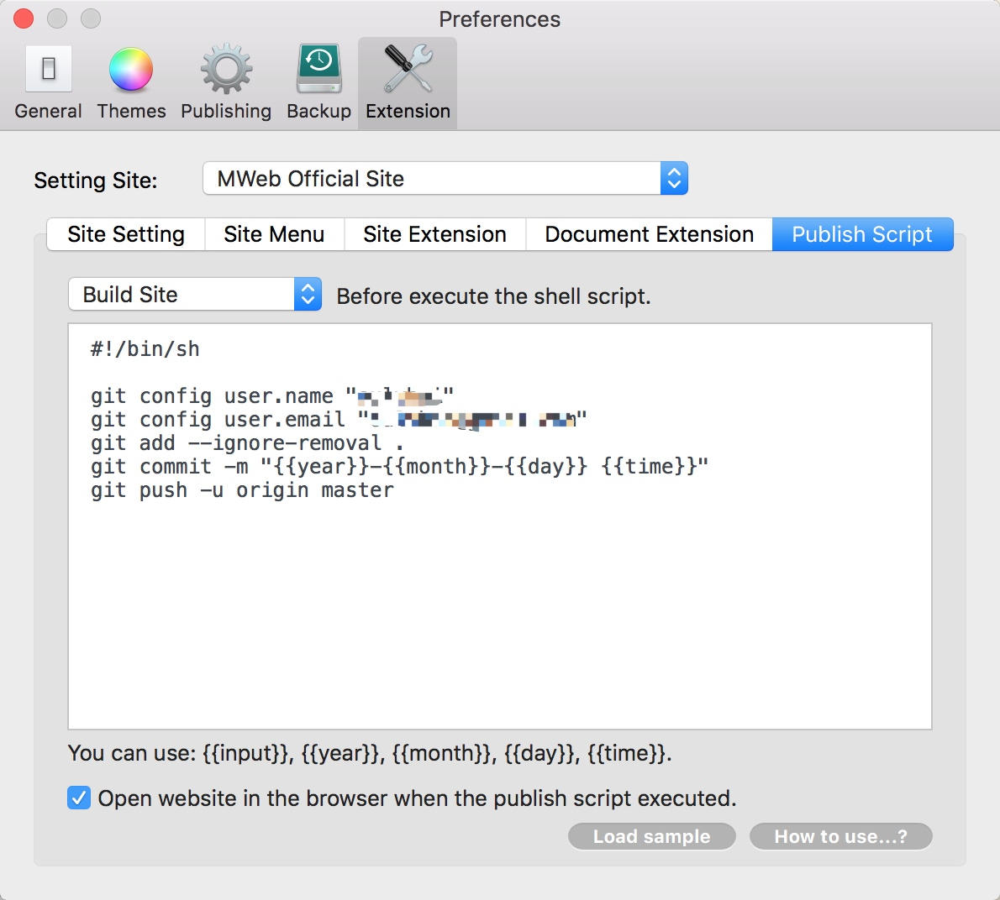
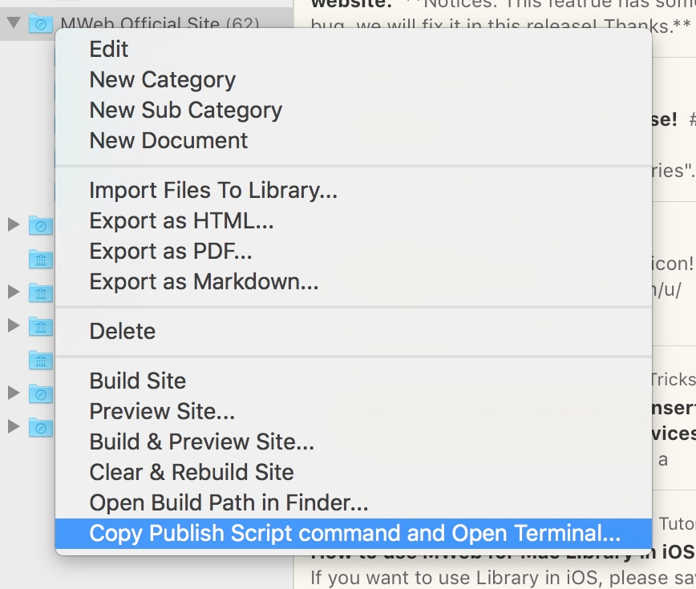

How to use Publish Script to Publish website.
Publish Script is a new feature in MWeb for Mac 2.2.3. It's taken a new experience for Edit/Publish in MWeb. When you finish edit, just right click the site category and choose "Copy Publish Script command and Open Terminal...", when the Terminal is opened, just press Command + V, then all is OK. No need to key the publish command in terminal app.
1. Start
The publish script only test for git, you can use it publish to github pages. If you didn't has github pages, please check: https://pages.github.com/.
2. Clone your github pages to the MWeb static website output folder.
**Notices:**If you already use github to publish the static website, please skip this step. If you didn't, please check the below steps:
- Use MWeb build the Site.
- Go to MWeb "Preferences" - "General" - "Build Sites Save Location", click "Show in Finder". Now you in the "MWeb static website output location" in Finder. The website I build is "MWeb Official Site", so there is a "MWeb Official Site" folder in that. I will use "MWeb Official Site" for the example.
- Open terminal, set the current folder is "MWeb static website output location".
You can choose "MWeb Official Site" parent's folder and pressCMD + C, switch to terminal, keycdand space, then pressCMD + Vand pressEnterkey. - Delete the "MWeb Official Site" folder. Execute the command:
git clone 'your github pages repo' 'MWeb Official Site'in terminal. Please use your github pages repo and folder name. - Use "Clear and Rebuild Site" menu in MWeb.
3. Config Publish Script
Open MWeb "Preferences" - "Extension" - "Publish Script", sea the below:

If you click "Load Sample" button, you will sea the sample like below, you can edit it for your own.
#!/bin/sh
# Please set the name and email.
# Because MWeb can't get your github global setting.
git config user.name "Your github name"
git config user.email "Your github email"
git add --ignore-removal .
git commit -m "{{year}}-{{month}}-{{day}} {{time}}"
git push -u origin master
4. Execute the Publish Script
Right click the site category and choose "Copy Publish Script command and Open Terminal...", when the Terminal is opened, just press Command + V to execute the script. like below:
